모코코 베이스 캠프 가이드(업데이트 예정)
0. 쿠폰 입력하기
이벤트 쿠폰을 입력하고 보상을 받습니다. 홈페이지에서 확인할 수 있고 계정당 1회 입력 가능합니다.
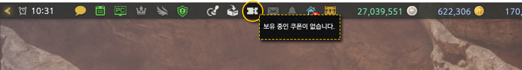
인게임 상단 쿠폰 버튼이나
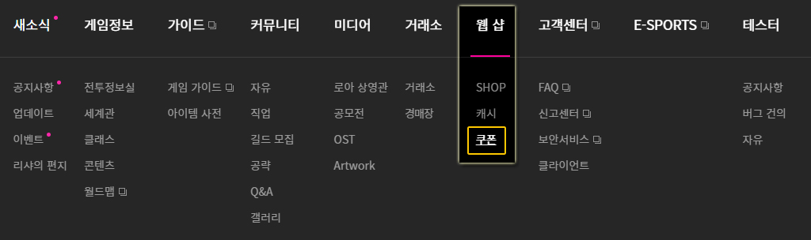
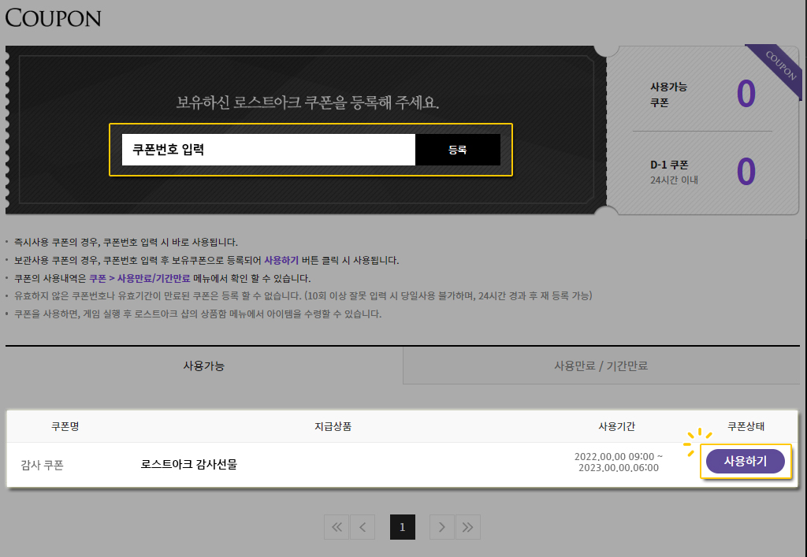
홈페이지 웹샵 - 쿠폰에서 입력 가능합니다.
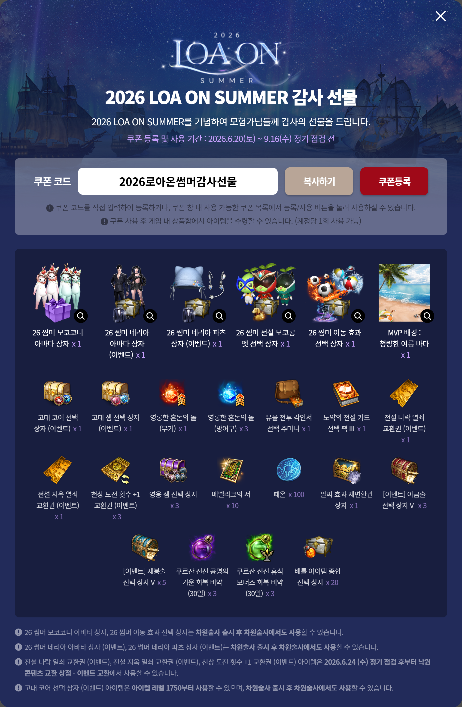
2026로아온썸머감사선물 < 입력하시면 됩니다.
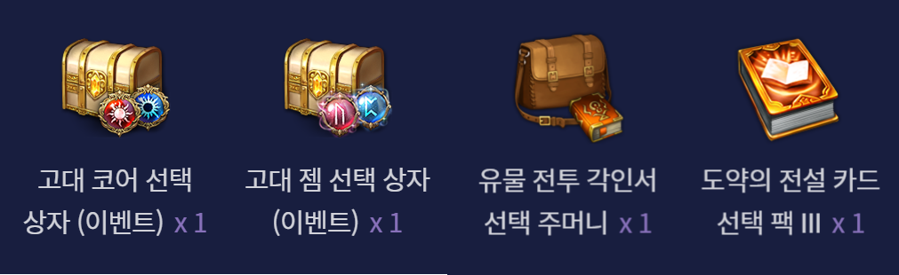
"고대 코어 선택 상자","유물 전투 각인서 선택 주머니","도약의 전설 카드 선택 팩"을 제외한 보상은 필요에 따라 자유롭게 사용하셔도 됩니다.
"고대 젬 선택 상자"는 딜러, 서폿에 맞춰서 받으시면 됩니다.
"고대 코어 선택 상자","유물 전투 각인서 선택 주머니","도약의 전설 카드 선택 팩" 는 반드시 고인물들에게 물어보고 사용하시기 바랍니다.
특히 "고대 코어 선택 상자"는 이번에 처음 쿠폰으로 뿌리는 보상으로 인게임 내에서 확정으로 얻을 수 있는 방법이 단 하나 뿐입니다.
이론상 운이 없어서 고대 코어를 먹지 못한다면 6개의 고대 코어 선택 상자가 필요하기 때문에 반드시 사용하지 말고 기다리시기 바랍니다.
1. 점핑권 사용하기
이벤트 점핑권
이번 로아온에서 모든 직업에 사용가능한 점핑권을 명의당 1회 기본으로 제공하고 신직업 차원술사에만 사용 가능한 1장을 추가로 제공해 총 2장을 받을 수 있습니다.
사용 시 1660레벨로 캐릭터가 성장하고 운명의 궤적 퀘스트까지 완료가 된 상태가 됩니다.
뉴비들이 자주 오해를 하는데 점핑권을 사용한 캐릭터에 모코코 베이스 캠프를 설정할 필요는 없습니다.
모코코 베이스 캠프를 지정하는 조건이 1660이기 때문에 점핑권을 사용하고 지정을 하는 방식으로 오해를 하지만 원정대에 점핑권을 사용하지 않고도 1660 이상인 캐릭터가 있다면 이 캐릭터에 모코코 베이스 캠프를 지정할 수 있습니다.
부계정에 사용?
이벤트 점핑권은 일반 트리시온 패스(과금 점핑권)과는 다르게 원정대에 해당 레벨까지 퀘스트를 클리어한 캐릭터가 존재하지 않더라도 사용이 가능합니다.
예를들어 쿠르잔 북부 패스를 사용하기 위해서는 쿠르잔 북부까지 퀘스트를 클리어한 캐릭터가 원정대에 존재해야 하는데 이벤트 점핑권은 해당 캐릭터가 없더라도 사용이 가능합니다.
이를 활용해 부계정이나 다른 서버에 캐릭터를 만들 때 이벤트 점핑권을 사용하면 직접 메인 퀘스트를 클리어하지 않아도 원정대를 구성할 수 있습니다.
뉴비/복귀라면 아직 부계정을 생각할 단계는 아니지만 게임을 하다보면 결국 6회제한이 걸리게 되고 부계정을 고려하게 될텐데 그럴 때 이벤트 점핑권을 사용하는걸 추천드립니다.
2. 모코코 베이스 캠프 캐릭터 설정하기
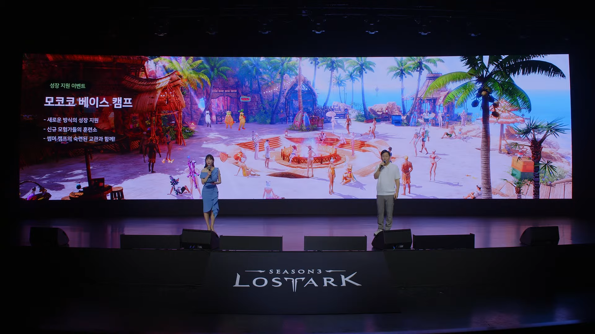
이번 로아온부터 익스프레스가 모코코 베이스 캠프로 변경됩니다.
기존의 익스프레스는 뉴비 친화적인 이벤트는 아니였습니다. 아이템만 지급하고 별다른 가이드 없이 미션을 수행하면 보상을 받는 방식이라서 게임에 익숙하지 않은 뉴비들은 뭘 해야할지 어려움을 겪는 경우가 많았습니다.
이번 모코코 베이스 캠프부터는 단순히 아이템을 지급해주는 것만이 아니라 단계별로 게임에 익숙해질 수 있도록 실제 플레이를 통해 보상을 획득하고 성장 기회를 제공하는 방식으로 변경되었습니다.
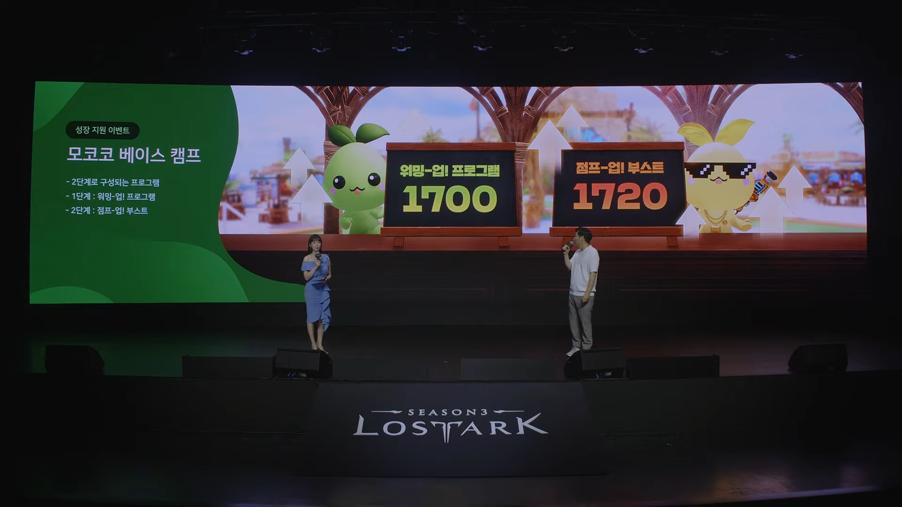
이번 모코코 베이스 캠프는 1단계: 워밍-업! 프로그램 과 2단계: 점프-업! 부스트 로 구성됩니다.
워밍-업! 프로그램
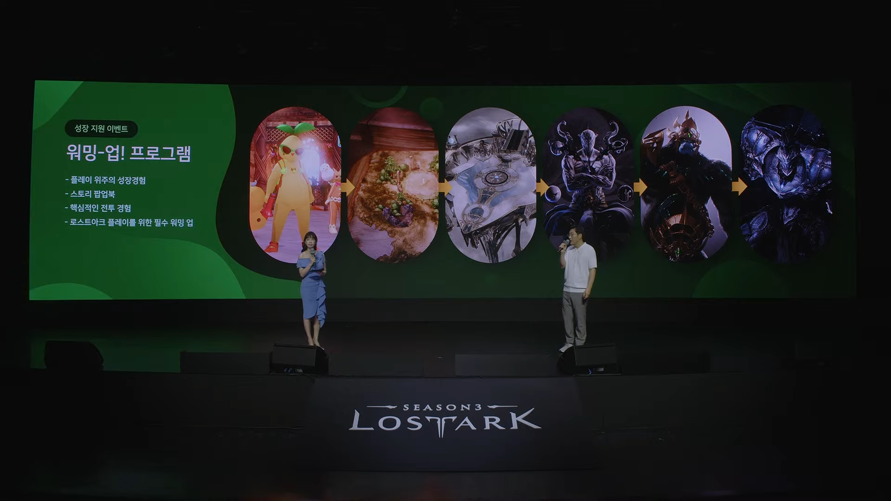
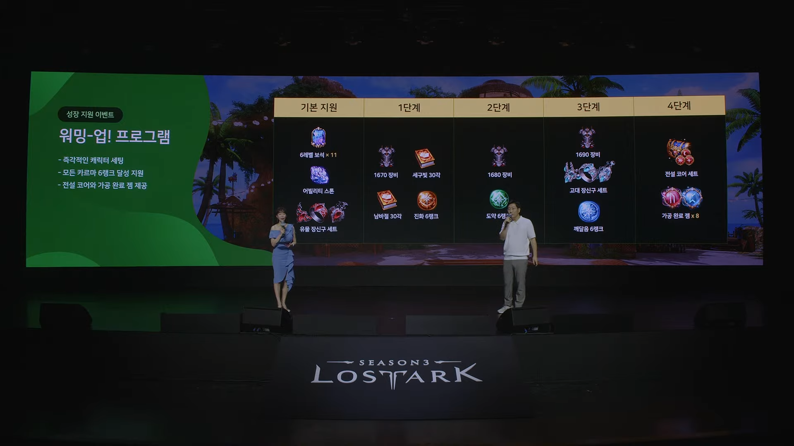
기존처럼 아이템만 제공하고 알아서 진행하는 방식이 아니라 실제 게임 플레이를 진행하면 자동으로 아이템을 세팅해주고 보상을 지급하는 방식으로 4단계에 나눠서 보상을 받을 수 있습니다.
보상으로 1700레벨까지 캐릭터를 성장시켜주며 "카르마", "전설 코어 세트"를 지급해주면서 낮은 레벨 구간에서 정보를 알아보고 세팅이 필요한 부분을 자동으로 채워주면서 편의성을 크게 높였습니다.
점프-업! 부스트
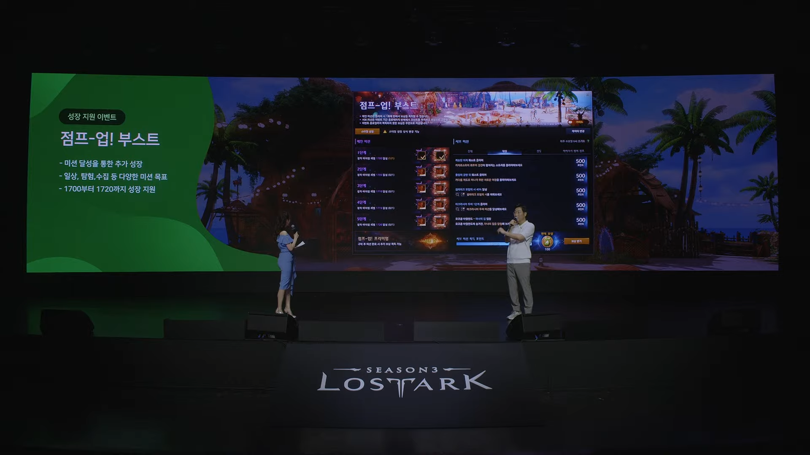
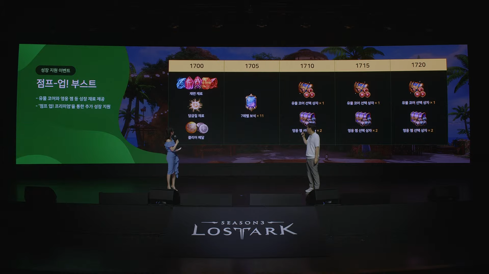
기존의 익스프레스와 비슷한 방식으로 보이지만 익스프레스 미션은 레이드 위주로 수직 컨텐츠에만 집중해서 미션이 있었지만 점프업 부스트는 레이드 외에도 일간 컨텐츠, 이벤트, 수평 컨텐츠 등 다양한 방식으로 미션 포인트를 획득할 수 있기 때문에 훨씬 편하게 미션을 달성할 수 있을것으로 생각됩니다.
점프업 부스트는 1720레벨까지 캐릭터 성장을 지원해줍니다.
차원술사 전용 이벤트
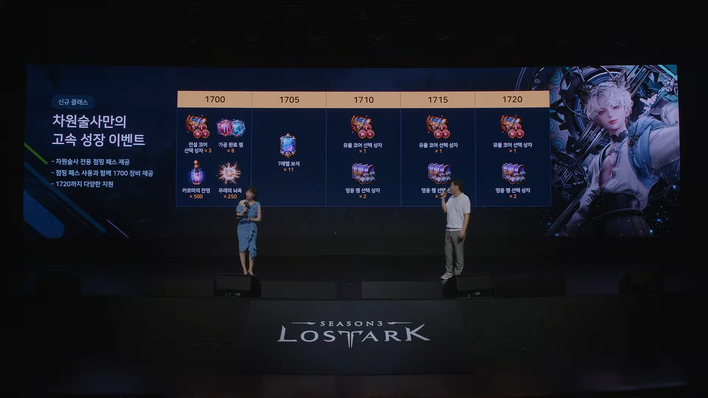
신규 직업 차원술사의 경우 모코코 베이스 캠프를 제외한 보상이 따로 존재합니다. 모코코 베이스 캠프 보상과 같은 보상을 받을 수 있는데 그것과 상관없이 모코코 베이스 캠프를 추가로 설정할 수도 있습니다.
차원술사에 모코코 베이스 캠프를 지정하면 모코코 베이스 캠프 보상을 2번 받게 되는건데 이렇게 되면 보석, 전설 코어, 카르마, 상급재련 재료 등이 중복으로 받게되어 쓸모가 없어집니다.
유물 코어 선택 상자가 6개가 되기 때문에 1캐릭터를 빠르게 유물 코어 졸업을 할 수는 있지만 다른 보상들이 뉴비/복귀 유저에게 큰 도움이 되기 때문에 가능하다면 차원 술사가 아닌 다른 캐릭터에 모코코 베이스 캠프를 지정하는걸 추천드립니다.
차원술사 2개를 키워서 보상을 나눠 받는것도 가능합니다만 차원술사 출시 전까지 보상을 받지 못한다는 문제가 있습니다.
3. 모코코 베이스 캠프 미션 클리어
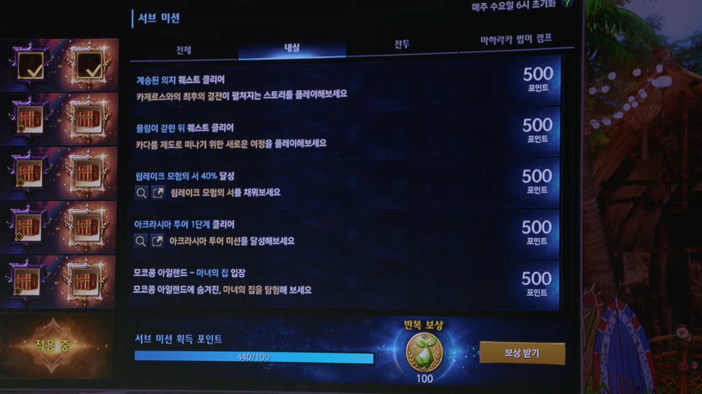
모코코 베이스 캠프 미션을 클리어하고 보상을 받습니다.
워밍-업! 프로그램은 30분 내외의 시간이 소비되는 미션으로 간단하게 클리어하고 보상을 받을 수 있습니다.
점프-업! 부스트는 내실/전투/마하라카 썸머캠프(이벤트) 3종류로 나뉘는 미션을 클리어해서 포인트를 모으고 보상을 받을 수 있습니다.
기존까지의 익스프레스 미션은 레이드 콘텐츠에 집중된 미션들만 있었기 때문에 레이드 콘텐츠에 익숙하지 않은 뉴비 유저들이 어렵게 느끼는 경우가 있었습니다.
점프업 부스트 미션은 전투 외에도 내식, 이벤트 등 다양한 방식으로 포인트를 얻을 수 있기 때문에 레이드에 익숙하지 않더라도 충분히 모든 보상을 받을 수 있으니 천천히 미션을 달성하시면 되겠습니다.
4. 내실 및 배럭 육성
모코코 베이스 캠프 미션을 다 클리어 했거나 중간에 진행이 불가능한 경우에는 이제 내실 및 배럭 육성을 진행하시면 됩니다.
내실은 원정대 단위로 공유되는 스펙업 요소로 아크 패시브 포인트, 스킬 포인트, 룬 등 중요한 역할을 하는 스펙업 요소이기 때문에 꾸준히 진행해 주시는 게 좋습니다. 내실 관련해서 자세한 내용은 뒤쪽의 ➡️ 내실 부분에 작성했으니 참고하시면 되겠습니다.
배럭은 본캐릭터의 성장을 돕기 위해 육성하는 부캐릭터를 의미합니다. 로스트아크는 부캐릭터의 재화를 본캐릭터에 몰아줘서 스펙업을 하는 방식이 효율적입니다. 그래서 본캐 육성 후 남는 시간과 재화를 배럭에 투자하는게 매우 효율적이고 게임사에서 장려하는 방식입니다.
로스트아크는 골드 획득 6회 제한이라는 시스템이 있어서 6번째 캐릭터 이후로는 레이드 클리어 시 골드를 획득하지 못합니다. 7번째 캐릭터부터는 골드를 획득할 수 없기 때문에 효율이 급감하니까 배럭은 일단 6개까지만 만드시는걸 추천드립니다.
5. 챌린지 프리미엄
챌린지 프리미엄은 과금을 통해 구매할 수 있는 상품으로 모코코 베이스 캠프 미션 클리어 시 추가 보상을 획득할 수 있는 패키지입니다.
보상이 매우 좋은 편이기 때문에 가능하다면 구매를 하는걸 추천드립니다.